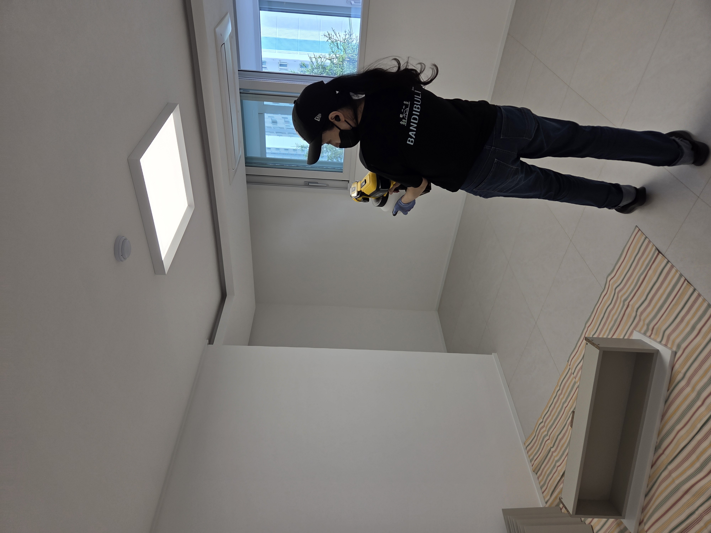
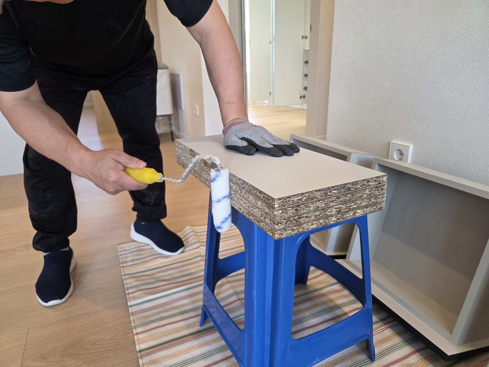
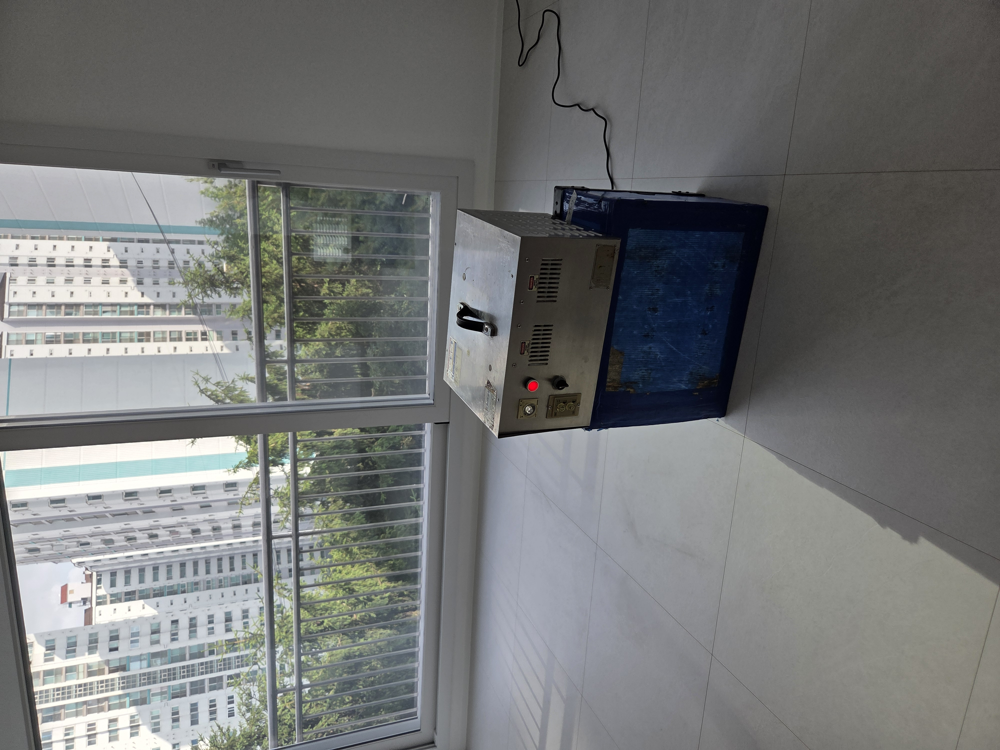
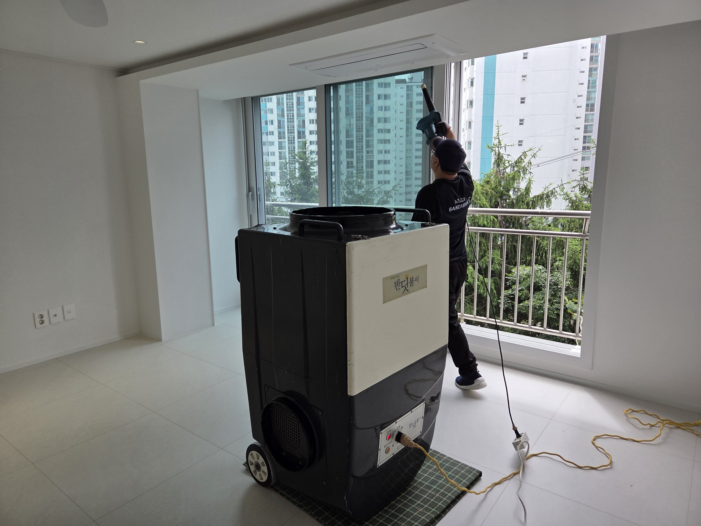

공정 이미지 교체 영역
01
현장 하자 체크
시공 전 공간 상태를 먼저 확인합니다. 마감재 손상, 들뜸, 변색 우려가 있는 부분, 가구 상태 등을 살펴본 뒤 현장에 맞는 시공 범위를 안내합니다.
Patented indoor air care process
냄새만 덮지 않고, 원인물질부터 관리합니다
사전 측정부터 액상·차폐·오존 산화·H14 집진, 사후 측정과 카카오톡 공유까지. 입주 전 실내공기질을 단계적으로 확인하고 관리합니다.
반딧불이 공정 핵심 포인트
하자 체크 · 가구 내부 확인 · 포름알데히드/라돈 측정
액상 · 차폐 · 오존 산화 · H14 집진
사후 측정 · 카카오톡 공유 · 현장별 공식 서비스 안내
Process flow
현장 확인부터 사후 측정과 공식 서비스 안내까지 한눈에 볼 수 있도록 단계별 타임라인으로 정리했습니다.
Detailed steps
공정별 이미지는 현장 사진이나 안내 이미지로 교체할 수 있도록 영역을 분리했습니다.
시공 전 공간 상태를 먼저 확인합니다. 마감재 손상, 들뜸, 변색 우려가 있는 부분, 가구 상태 등을 살펴본 뒤 현장에 맞는 시공 범위를 안내합니다.
새가구, 붙박이장, 신발장, 싱크대 내부 마감 상태 확인 및 마감 처리가 안 된 MDF·PB 절단면, 서랍 내부, 선반 분리합니다.
시공 전 포름알데히드와 라돈 수치를 확인해 실내공기 상태를 먼저 점검합니다. 대형시설의 경우 현장 상황에 따라 VOCs 측정 가능합니다.

벽지, 목재, 마감재, 가구 표면 등 오염물질이 배출될 수 있는 부위에 친환경 화학 분해제 에코듀를 분사해 실내오염물질 저감에 도움을 줍니다.

MDF·PB 절단면, 붙박이장, 신발장, 싱크대 내부 등 서랍과 선반 가구 안쪽에서 냄새가 올라올 수 있는 지점을 차폐 공정으로 관리합니다.

오존 산화 공정을 통해 포름알데히드와 VOCs 등 냄새 원인물질 저감에 도움을 주는 공정을 진행합니다. 오존 시공 중에는 출입을 금하고 있습니다.

H14 헤파 필터 집진 장비를 활용해 미세입자와 잔여 오염요인을 관리하고, 시공 후 실내 공기 상태를 정리합니다.
시공 후 포름알데히드와 라돈 수치를 다시 확인해 고객이 시공 전후 달라진 실내환경을 비교할 수 있도록 안내합니다. 대형시설은 필요 시 VOCs 측정 결과와 시공 결과 보고서 작성 해 드립니다.
시공 과정, 측정 내용, 현장 확인 사항은 사진과 함께 카카오톡으로 공유할 수 있습니다. 고객이 현장에 없더라도 진행 과정을 확인할 수 있도록 안내합니다.
반딧불이 공식 서비스인 먼지다듬이 방역 소독, 피톤치드 관리, 입주 후 새가구 서비스는 현장 상황에 따라 안내드릴 수 있습니다.
28도 이상의 고온 베이크아웃, 온열기 작동, 에어컨·전열교환기 소독은 마감재나 내부 부품 손상 우려가 있을 수 있어 모든 현장에 동일하게 진행하지는 않습니다.
즉, 반딧불이 시공은 무조건 많은 작업을 추가하는 방식이 아니라, 시공 현장 상태를 확인한 뒤 안전하게 필요한 공정을 진행하는 것을 원칙으로 합니다.
Consultation
신축 아파트, 구축 올수리, 새가구 반입, 대형시설까지 공간 상태에 따라 필요한 공정은 달라질 수 있습니다. 입주 전 실내공기질이 걱정된다면 먼저 상담해보세요.